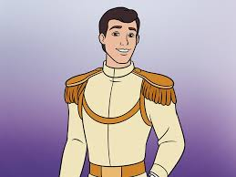
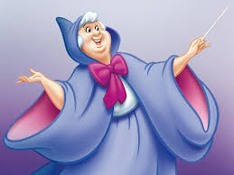
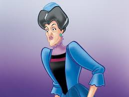

シンデレラ

やさしく前向きな心を持つ女の子です。 困難な時にも希望を失わず、夢を信じ続けます。
「小さな希望を、大切に育てていく。」
やさしさと希望を持ち続けるシンデレラの物語。 夢に向かって進む登場人物たちの魅力をまとめました。

シンデレラは、つらい毎日の中でもやさしさと希望を忘れず、 自分の未来を信じて進む物語です。魔法の夜会やガラスの靴が、 夢へ向かう一歩を美しく描きます。
やさしく前向きな心を持つ女の子です。 困難な時にも希望を失わず、夢を信じ続けます。

舞踏会でシンデレラと出会う王子です。 ガラスの靴を手がかりに、大切な人を探します。

シンデレラを助ける魔法使いです。 夢へ踏み出すきっかけを、やさしい魔法で届けます。
シンデレラを慕う小さな友達です。 体は小さくても、仲間のために一生懸命がんばります。

シンデレラに厳しく接する人物です。 物語の中で、シンデレラの強さとやさしさを際立たせます。